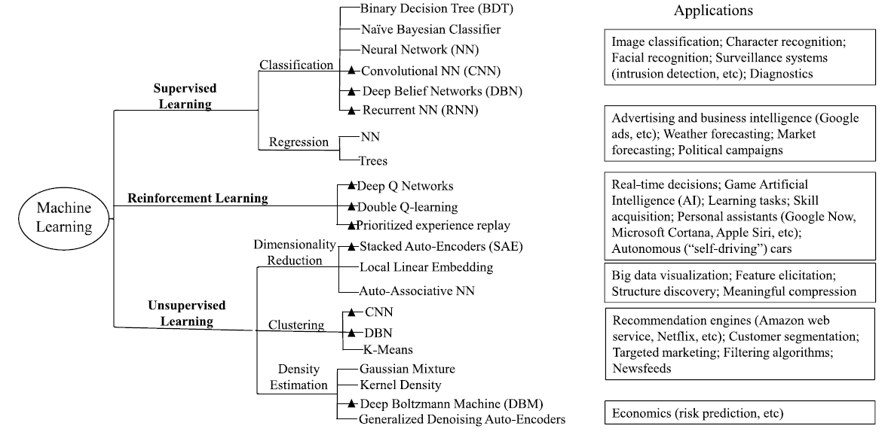
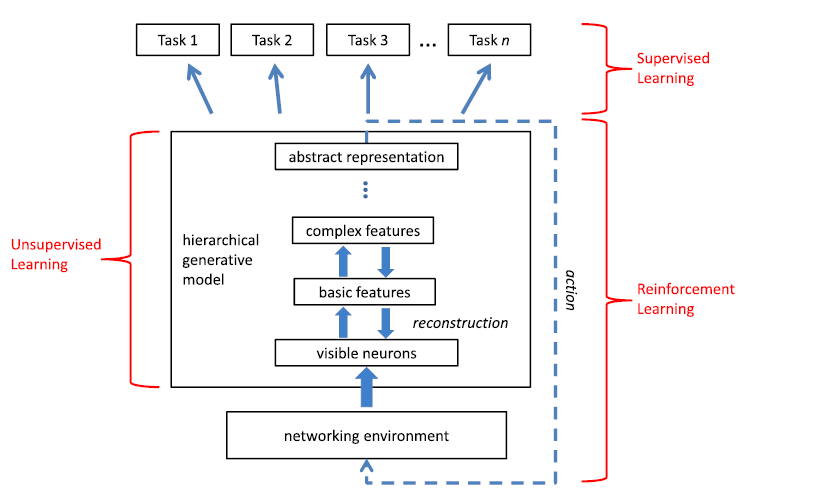
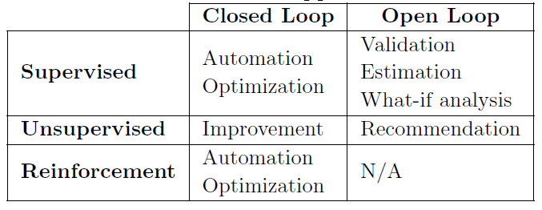

{kind=link}
This post gives a general overview of the set of tasks with respect to the networking with machine learning and deep learning, and provide a list of benchmark datasets that can play with for networking.
Introduction
Machine learning & deep learning techniques have advanced many fields such as Computer Vision (CV) and Natural Language Processing (NLP), and also have been embedded in our daily lives, e.g., classifying images, facial recognition, and recommending items in Amazon[1] or Netflix[2].The following figure from Fadlullah et al. [3] provides a good summary of different machine learning techniques and their applications.

In the networking community, there has been many proposals to explore machine/deep learning for controlling and operating networks. Knowledge Plane (KP) [4] is one of the first proposals to incorporate a knowledge plane, which relies on machine learning and cognitive techniques for network management & operations. More recently, Knowledge-Defined Networking (KDN) [5] restaed the concept of KP in the context of the Software-Defined Networking (SDN), which can provide a centralized control with a rich view of the network via network analytics.
On the one hand, recent advances of networking technologies such as SDN, Network Function Virtualization (NFV) and Telemetry provide unique opportunities for adopting machine/deep learning techniques with the huge amount of data we can gather with a centralized view & control. On the other hand, the growing complexity of future networks which cannot be handled by simple heuristics and human, also requires the help of machine/deep learning approaches for automation as well as recommendations for network control, operations and management.
In line with the KDN vision, there has been many surveys discussing challenges, opportunities with promising problems that can be dealt with machine/deep learning approaches [6][3:1][7][8][9][10][11][12][13][14][15][16]. The following summaries for each survey might be useful as a pointer for each survey if the reader wants to delve into details.
- [6:1] - Defined the workflow of machine learning for networking & provided an overview of the studies based on the workflow.
- [3:2] - Review of deep learning approaches for network traffic control.
- [7:1] - Brief oerview of FCAPS (Fault, Configuration, Accounting, Performance, Security) management, and a proposal of C-MAPE: a concept of cognitive control loop for network management on top of MAPE (Monitor-Analyze-Plan-Excute [17]).
- [9:1] - Deep learning vision for network traffic control.
- [10:1] - Detailed overview of recent AI (Artificial Intelligence not only machine learning) approaches applied to the SDN paradigm.
- [11:1] - Review of unsupervised learning for networking.
- [13:1][12:1] - Overview of AI techniques & taxonomies for SON (Self-Organizing Networks)
- [15:1] - Review of AI techniques for cognitive routing.
- [16:1] - Review and provide taxonomy of cloud autoscaling systems
- [14:1] - Comprehensive survey on machine learning for networking problems (the most comprehensive/longest one with 500+ references).
Machine & Deep Learning Tasks for Network Management
This section provides an overview of different tasks that machine/deep learning approaches can be applied in the networking domain based on these recent surveys & reviews.
Supervised Learning Problems
Many problems associated to networking can be formulated as a prediction or classification problem.
Traffic prediction: Depends on whether the traffic prediction is performed with direct observations or not, there are two research directions:
-
Time series analysis for traffic prediction with direct observations. However, it is sometimes difficult to observe in the context of large-scale and high speed network environment.
-
Network tomography which predicts traffic using indirect metrics either (1) with engineered features with domain knowledge or (2) using machine/deep learning approaches for end-to-end learning, i.e., learning high-level features automatically.
Traffic classification: This aims to match network applications & protocols with the corresponding traffic flows [18]. As the misclassfication causes a big cost in the context of networking, it is challenging to deal with robustness such as how the devised model performs on unknown traffic.
Resource prediction: In order to improve the network performance in a cost efficent way, there are many dynamic allocation problems to deal with such as assigning optimal number of Virtual Machines (VMs). The fundamental step is predicting resource usage, e.g., predicting the CPU consumption based on traffic features.
Network performance prediction: Similar to the abovementioned prediction problems, there are many prediction problems associated to network performance such as video QoE (Quality of Experience).
Reinforcement Learning
Reinforcement learning deals with agents which learn to make better decisions through experience, i.e., the agents start without any knowledge about a task and learn the corresponding model of the task by reinforcement - the actions they take and the reward they get with these actions [19].
Resource management: This type of problems is ubiquitous in networking such as virtual machine placement & autoscaling in cloud computing [20] and packing tasks with multiple resource demands [19:1].
Self-Organizing Netowrks (SON) [21]: With the increasing topological and functional complexity of networks, Self-Organizing Networks is in demand for network control and operations. SON consists of all Self-X capabilities such as:
- Self-Configuration of system parameters with changing environment
- Self-Optimization of the network performance
- Self-Healing of the system, i.e., recovering network functionalities & services after fault or failures
Unsupervised Learning
There are many situations that we do not have labeled data for supervised learning or it is impractical to wait for feedback for reinforcement learning. Unsupervised learning aims to infer representations from data that has not been labeled, classified or categorized. These representations can be used for many downstream tasks such as clustering, or improving the performance of related supervised learning tasks. In contrast to the amount of works done with supervised learning and reinforcement learning for different problems in the networking field, unsupervised learning has been less explored in this field [11:2].
However, unsupervised learning has gained a lot of attention and successfully advancing other fields such as NLP. For example, word2vec [22] in NLP clearly shows the latent representations of words which are pre-trained (or learned via an unsupervised learning approach) with a large corpus of documents (e.g., Wikipedia can be used for many downstream tasks such as document clustering and sentiment classification.
Learing internal representations of networking data: COMANETS (COgnition-BAsed NETworkS) [21:1] is a recent concept for leveraging unsupervised learning (using Restricted Boltzmann Machine) to learn the latent representations of networking data. A practical example using the COMANETS concept for cognitive controlling video traffic shows that using the latent representations can improve the control performance compared to the raw networking features.
The following figure shows the COMPANETS concept [21:2]. Similar to the word vectors (latent representations or embeddings) in NLP, the latent representations of networking data can be used for many downstream tasks along with supervised learning & reinforcement learning.
Traffic Classification: Although the majority of previous studies for traffic classification is based on supervised learning approaches, leveraging completely unsupervised methods for traffic classification is an ongoing research topic [11:3].
Anomaly/Intrusion Detection: Identifying intrusion and anomaly behavior that deviates from normal behavior plays important role in networking with respec to its performance as well as security. Anomaly/Intrusion Detection can be done either in a supervised or unsupervised manner [23].
Decision Making
The objective of leveraging abovementioned techniques is to make a decision either completely automatically or to help humans make decisions. Depends on whether there is human involvement or not, the decision making can be done in a (1) closed loop or (2) open loop. The following figure from [5:1] summarizes the three types of machine learning approaches in terms of decision making.

Closed loop: The models learned from supervised learning or reinforcement learning can be directly used for automation and making decisions by itself without any human (e.g., operator) involvement. The models can also be used for optimizing the network configuration out of different possible configurations based on the corresponding performance. The knowledge extracted via unsupervised learning can be used for improving other tasks with respect to networking.
Open loop: In this case, human is still in charge of making the final decision, and the insight (e.g., predicted values, classes etc.) helps humans to make the decision. For example, a human can validate and then approve/deny the decisions made by a model learned via supervised learning, or use the estimation of the model into consideration. Similarly, the correlations between different features can be taken into consideration when a human making decision.
Benchmark Datasets
Given the recent rapid development of machine & deep learning in other domains with benchmark datasets such as ImageNet for Computer Vision & the ones (http://nlpprogress.com/) for Natural Language Processing, it is obvious that we need to push hard to have many benchmarks available for advancing machine & deep learning approaches in the networking domain[6:2]. In the following table, we summarize some benchmark datasets that are publicly available for benchmarking different machine/deep learning algorithms.
Prediction
| Dataset | Description | Ref. |
|---|---|---|
| VNF (OVS) | predicting CPU consumption of an OVS connected to a SDN controller with respect to 86 traffic features | [5:2] |
| VNF (Firewall) | predicting CPU consumption of a Firewall connected to a SDN controller with respect to 86 traffic features | [5:3] |
| VNF (Snort) | predicting CPU consumption of a Snort connected to a SDN controller with respect to 86 traffic features | [5:4] |
| Overlay-Underlay | predicting the average delays among paths between overlay nodes given the traffic volumn & the rounting | [5:5] |
| Routing | knowledgedefinedneFlow-level delay in a scale-free network with 4 different routings | |
| Saturation | Delay among pairs of nodes in a 10-nodes scale-free network changing the traffic intensity and traffic distribution | |
| NetSize | Delay among pairs of nodes in a 5, 10 and 15 nodes scale-free network. | |
| Topologies | Delay among pairs of nodes in different topologies and sizes. | |
| WS-DREAM | QoS datasets collected from real-world Web services. | [24] |
Classification
| Dataset | Description | Ref. |
|---|---|---|
| MAWI | MAWI Working Group Traffic Archive | [25] |
| WITS | Waikato Internet Traffic Storage | |
| LBNL/ICSI | LBNL/ICSI Enterprise Tracing Project | |
| KDD99 | Classifying intrusion & normal connection | |
| NetCla | NetCla: The ECML-PKDD Network Classification Challenge |
I hope you found this overview useful. If I made any error, missed a relevant reference & dataset, or misrepresented some aspect, or if you would just like to share your thoughts, please leave a comment below.
In case you would like to refer the post, consider citing it as:
Guangyuan Piao (2018). "Machine & Deep Learning for Network Management: An Overview with Benchmarks". https://goo.gl/gp7gBb
@misc{piao2018b1,
author = {Piao, Guangyuan},
title = {Machine & Deep Learning for Network Management: An Overview with Benchmarks},
year = {2018},
howpublished = {Blog post},
url = {https://goo.gl/gp7gBb}
}
References
Amazon's Giving Away the AI Behind Its Product Recommendations (2016) ↩︎
Gomez-Uribe, Carlos A. and Hunt, Neil, "The Netflix Recommender System: Algorithms, Business Value, and Innovation. ACM Transactions on Management Information Systems", https://dl.acm.org/citation.cfm?id=2843948 ↩︎
Fadlullah, Zubair et al. "State-of-the-Art Deep Learning: Evolving Machine Intelligence Toward Tomorrow’s Intelligent Network Traffic Control Systems" (2017). https://doi.org/10.1109/COMST.2017.2707140 ↩︎ ↩︎ ↩︎
A knowledge plane for the internet (2003). SIGCOMM. http://doi.acm.org/10.1145/863955.863957 ↩︎
Clark, David D. et al. "Knowledge-Defined Networking" (2016). SIGCOMM Reivew. https://arxiv.org/pdf/1606.06222.pdf ↩︎ ↩︎ ↩︎ ↩︎ ↩︎ ↩︎
Wang, Mowei et al. "Machine Learning for Networking: Workflow, Advances and Opportunities" (2017). IEEE Network. https://arxiv.org/pdf/1709.08339.pdf ↩︎ ↩︎ ↩︎
Ayoubi, S "Machine Learning for Cognitive Network Management" (2018). IEEE Communications Magazine. https://doi.org/10.1109/MCOM.2018.1700560 ↩︎ ↩︎
Hyun, N. Van Tu and J. W. Hong, "Towards knowledge-defined networking using in-band network telemetry" (2018). IEEE/IFIP Network Operations and Management Symposium. https://doi.org/10.1109/NOMS.2018.8406169 ↩︎
Kato, Nei, et al. "The deep learning vision for heterogeneous network traffic control: Proposal, challenges, and future perspective." IEEE wireless communications 24.3 (2017): 146-153. https://doi.org/10.1109/MWC.2016.1600317WC ↩︎ ↩︎
Latah, Majd, and Levent Toker. "Artificial Intelligence Enabled Software Defined Networking: A Comprehensive Overview." (2018). https://arxiv.org/abs/1803.06818 ↩︎ ↩︎
Usama, Muhammad, et al. "Unsupervised Machine Learning for Networking: Techniques, Applications and Research Challenges." arXiv preprint arXiv:1709.06599 (2017). https://arxiv.org/abs/1709.06599 ↩︎ ↩︎ ↩︎ ↩︎
Wang, Xiaofei, Xiuhua Li, and Victor CM Leung. "Artificial intelligence-based techniques for emerging heterogeneous network: State of the arts, opportunities, and challenges." IEEE Access 3 (2015). https://doi.org/10.1109/ACCESS.2015.2467174 ↩︎ ↩︎
Aliu, Osianoh Glenn, et al. "A survey of self organisation in future cellular networks." IEEE Communications Surveys & Tutorials 15.1 (2013). https://doi.org/10.1109/SURV.2012.021312.00116 ↩︎ ↩︎
Boutaba, Raouf, et al. "A comprehensive survey on machine learning for networking: evolution, applications and research opportunities." Journal of Internet Services and Applications 9.1 (2018). https://doi.org/10.1186/s13174-018-0087-2 ↩︎ ↩︎
Qadir, Junaid. "Artificial intelligence based cognitive routing for cognitive radio networks." Artificial Intelligence Review 45.1 (2016. https://doi.org/10.1007/s10462-015-9438-6 ↩︎ ↩︎
Chen, Tao, Rami Bahsoon, and Xin Yao. "A survey and taxonomy of self-aware and self-adaptive cloud autoscaling systems." ACM Computing Surveys (CSUR) 51.3 (2018): 61. ↩︎ ↩︎
White, Steve R., et al. "An architectural approach to autonomic computing." Autonomic Computing, 2004. Proceedings. International Conference on. IEEE, 2004. https://doi.org/10.1109/ICAC.2004.1301340 ↩︎
Nguyen, Thuy TT, and Grenville Armitage. "A survey of techniques for internet traffic classification using machine learning." IEEE Communications Surveys & Tutorials 10.4 (2008): 56-76. https://doi.org/10.1109/SURV.2008.080406 ↩︎
Mao, Hongzi, et al. "Resource management with deep reinforcement learning." Proceedings of the 15th ACM Workshop on Hot Topics in Networks. ACM, 2016. https://doi.org/10.1145/3005745.3005750 ↩︎ ↩︎
Heller, Brandon, et al. "Elastictree: Saving energy in data center networks." NDSI. Vol. 10. 2010. https://www.usenix.org/legacy/event/nsdi10/tech/full_papers/heller.pdf ↩︎
Zorzi, Michele, et al. "Cognition-based networks: A new perspective on network optimization using learning and distributed intelligence." IEEE Access 3 (2015): 1512-1530. https://doi.org/10.1109/ACCESS.2015.2471178 ↩︎ ↩︎ ↩︎
Mikolov, T., Sutskever, I., Chen, K., Corrado, G.S., Dean, J.: Distributed representations of words and phrases and their compositionality. NIPS (2013). pp. 3111–3119. ↩︎
Tsai, Chih-Fong, et al. "Intrusion detection by machine learning: A review." Expert Systems with Applications 36.10 (2009). https://doi.org/10.1016/j.eswa.2009.05.029 ↩︎
Zibin Zheng, Yilei Zhang, and Michael R. Lyu, “Investigating QoS of Real-
World Web Services”, IEEE Transactions on Services Computing , vol.7, no.1, pp.32-39, 2014. ↩︎Sony, C. S. L., and Kenjiro Cho. "Traffic data repository at the WIDE project." Proceedings of USENIX 2000 Annual Technical Conference: FREENIX Track. 2000. ↩︎